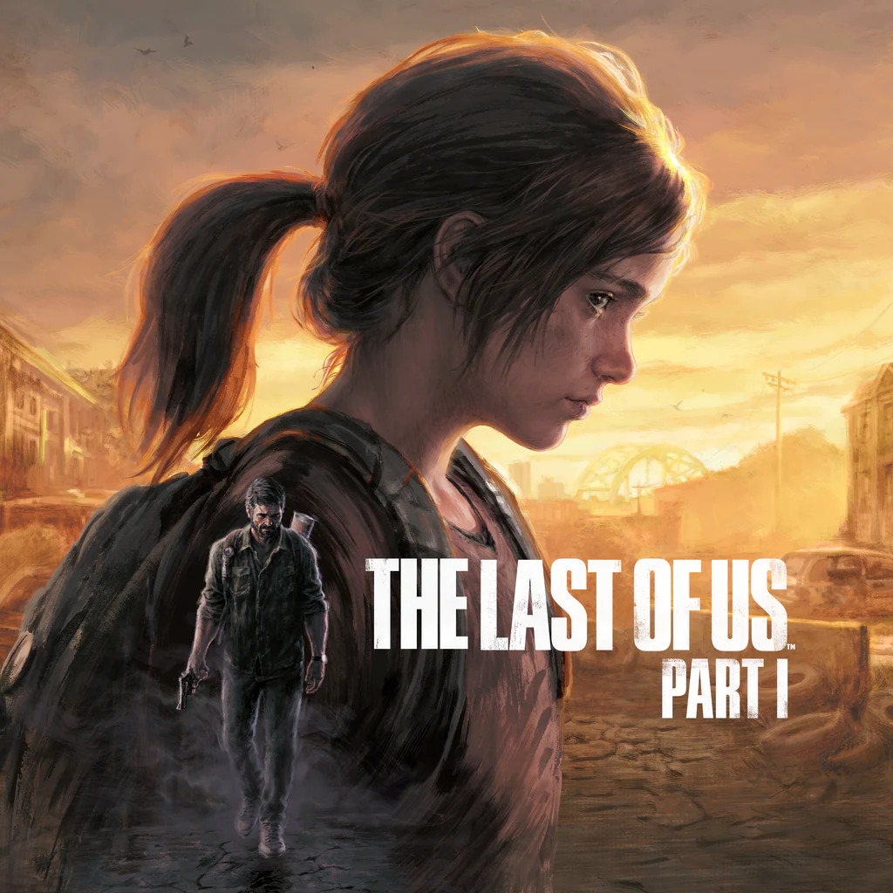

The Last of Us Part I
Ultra Street Fighter IV é um jogo de luta lançado em 2014 pela Capcom.
É uma versão atualizada de Street Fighter IV, trazendo novos personagens,
justes no balanceamento, novos modos de jogo e melhorias gráficas. O título
é muito apreciado na cena competitiva por sua jogabilidade refinada e diversidade
de lutadores.